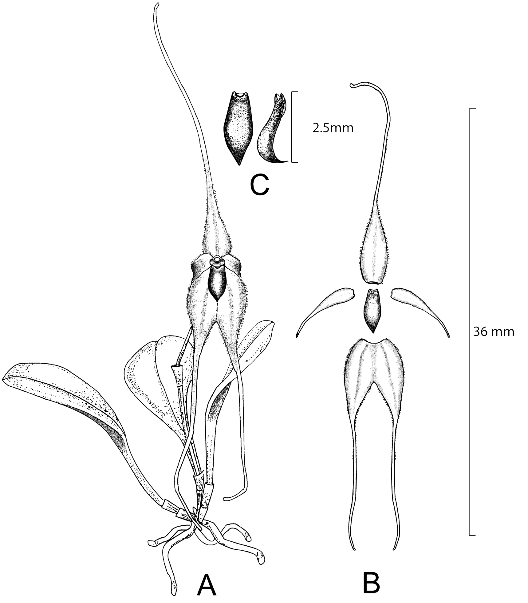
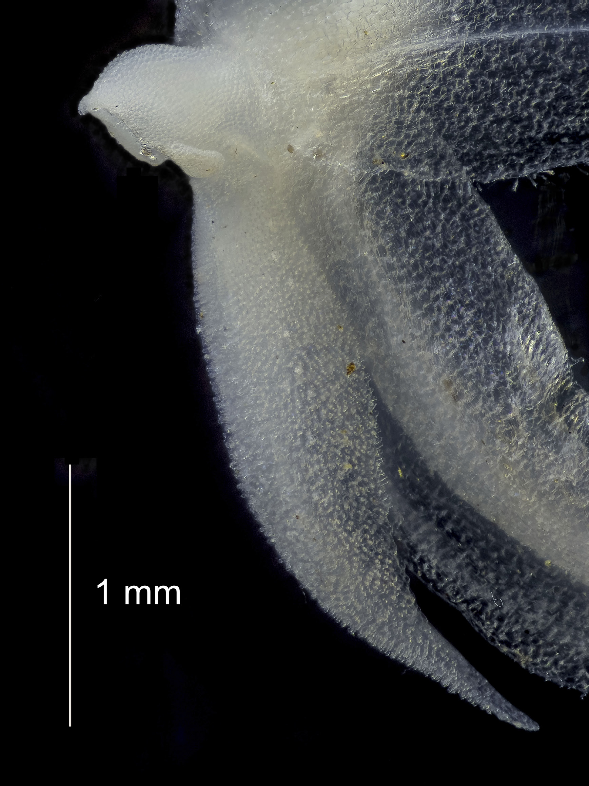

Lankesteriana 2017 17(1): -
A showy new Platystele (Pleurothallidinae: Orchidaceae) from northwest Ecuador
Jost, Lou, Iturralde, Gabriel
Abstract
Resumen. Se describe una nueva especie de Platystele (Pleurothallidinae: Orchidaceae) de los bosques piemontanos de la provincia de Carchi en el noroccidente de Ecuador. Esta especie presenta flores relativamente grandes en relación a la mayoría de las especies del género, cuyas caudas de los sépalos son largas y delgadas. Es similar a Platystele caudatisepala pero se distingue de esa especie por sus sépalos laterales parcialmente connados, el labio convexo con la punta y márgenes reflexos, los pétalos deflexos, a veces tocando sus puntas hacia atrás de la flor, los sépalos con márgenes recurvados y las hojas largamente pecioladas. A bstract . A new species of Platystele (Pleurothallidinae: Orchidaceae) is described from foothill forest in the province of Carchi in northwestern Ecuador. The species has relatively large flowers for the genus, with long slender sepaline tails. It resembles Platystele caudatisepala , but is distinguished from that species by the partially connate lateral sepals, the convex lip with reflexed tip and margins, the deflexed petals, sometimes with their tips touching behind the flower, the sepals with recurved margins, and the leaves long-petiolate.Full text
Full text is available as a scanned copy of the original print version. Get a printable copy (PDF file) of the complete article, or click on a page image below to browse page by page. Links are also available for Selected References.
Images in this article



